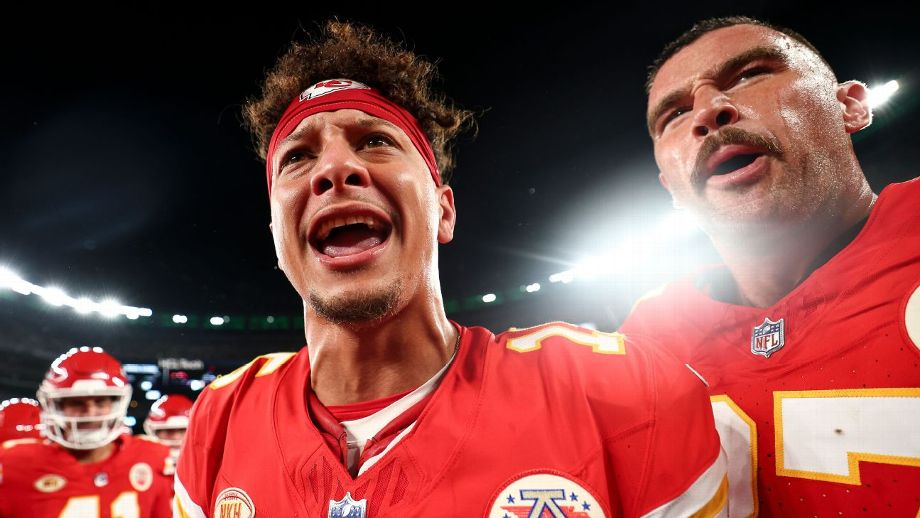
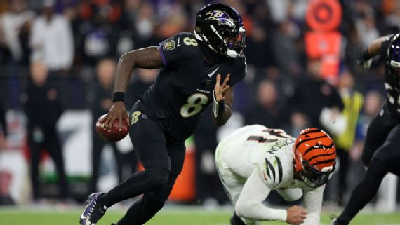

Tom Brady lamenta 'falta de excelência' da NFL e reclama do nível das partidas: 'Muita mediocridade'
Melhor jogador, maior 'falastrão' e alerta contra gramado sintético: os resultados de pesquisa anônima com jogadores da NFL

Nesta terça-feira (21), o The Athletic publicou uma pesquisa anônima com os jogadores da NFL e os atletas revelaram desde o jogador favorito deles na liga até uma luta contra os gramados sintéticos, passando por avaliações da arbitragem.
Como o esperado, Patrick Mahomes, quarterback do Kansas City Chiefs, foi o eleito o melhor jogador da NFL por seus pares, com 46,4% dos votos. O segundo colocado foi Aaron Donald, com 8,9%.
Já entre os mais falastrões da liga, o eleito foi C.J. Gardner-Johnson. O safety do Detroit Lions recebeu 24,6% dos votos para jogador que mais provoca durante os jogos.
O que mais chamou atenção, porém, foi que 82,7% dos jogadores admitiram tem um "problema real" com os gramados sintéticos que estão sendo implantados na liga. "Você se sente um m** neles", alertou um jogador.
Já entre os mais falastrões da liga, o eleito foi C.J. Gardner-Johnson. O safety do Detroit Lions recebeu 24,6% dos votos para jogador que mais provoca durante os jogos.
O que mais chamou atenção, porém, foi que 82,7% dos jogadores admitiram tem um "problema real" com os gramados sintéticos que estão sendo implantados na liga. "Você se sente um m** neles", alertou um jogador.
Taylor Swift e NFL- relação de loirinha com o futebol americano vai muito além!
Joe Burrow, QB dos Bengals, passará por cirurgia e irá perder restante da temporada da NFL
O quarterback do Cincinnati Bengals, Joe Burrow, não jogará novamente nesta temporada depois de sofrer uma ruptura no ligamento do punho direito, anunciou o técnico Zac Taylor na sexta-feira.
Burrow se machucou durante a derrota do Bengals por 34-20 para o Baltimore Ravens na quinta-feira. Ele disse na sexta-feira que sentiu um estalo no segundo quarto, quando deixou o jogo antes de ser descartado logo após o intervalo.
Taylor disse que Burrow provavelmente precisará de uma cirurgia para reparar o ligamento rompido.
Com Burrow fora, os Bengals recorrerão ao quarterback reserva Jake Browning, que fez 8 de 14 passes para 68 jardas e um touchdown contra os Ravens em sua primeira ação significativa na NFL.
A NFL está investigando o relato dos Bengals sobre a situação de lesão de Burrow antes do jogo de quinta-feira. Os Bengals postaram um vídeo no X na noite de quarta-feira de Burrow saindo do ônibus do time usando o que parecia ser um gesso macio na mão direita. Mais tarde, eles excluíram a postagem.
A liga analisa rotineiramente questões de conformidade com sua política de relatórios de lesões, e as violações podem resultar em multas à equipe ou perda de escolhas no draft. A NFL alertou as equipes nas reuniões de proprietários da primavera que elas eram obrigadas a listar todas as lesões.
Interceptado! Mahomes tenta passe pra endzone e perde a bola; VEJA!
Touchdown, Chiefs! Conexão Mahomes-Kelce aparece para colocar KC na frente; VEJA!
Ravens superam susto e arrasam os Bengals, que perdem Joe Burrow e se complicam na NFL
Bengals nesta quinta-feira (16) e não tomou conhecimento do adversário ao vencer por 34 a 20.
Com a vitória, os donos da casa isolam na liderança da AFC Norte, enquanto os Bengals praticamente veem a temporada escapar pelas mãos, com a lanterna da divisão e ainda mais motivos para se preocupar após lesão de Joe Burrow.
Com um primeiro quarto repleto de ingredientes, os Ravens logo sofreram um susto ao perderem Mark Andrews, que deixou a partida com uma lesão no tornozelo após uma disputa no ataque. Ainda assim, os donos da casa conseguiram controlar as ações.
Se por um lado a franquia de Baltimore perdia seu tight end, de outro o drama era ainda maior. Não bastasse a desvantagem no placar, os Bengals viram Joe Burrow voltar a sentir uma lesão no punho e abandonar a partida ainda no primeiro tempo.
Embalados por Lamar Jackson, os anfitriões ampliaram ainda mais a vantagem, levando o placar em 21 a 13 para o intervalo.

Na volta para o segundo tempo, os Ravens pareceram ter aprendido com os próprios erros. Depois da virada no último lance para o Cleveland Browns na rodada anterior, a equipe de Baltimore soube manter o ímpeto inicial e, mesmo com um esboço de reação dos adversários, ampliou a vantagem para encaminhar a vitória.